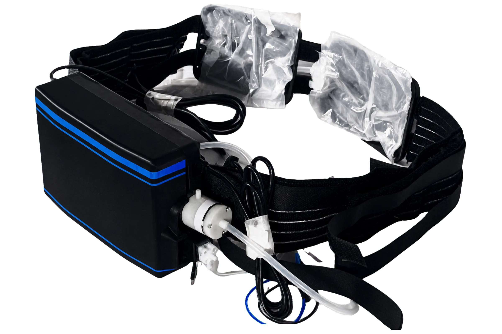
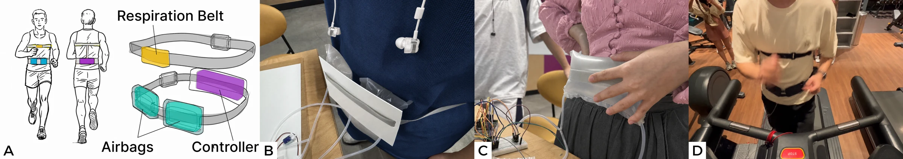
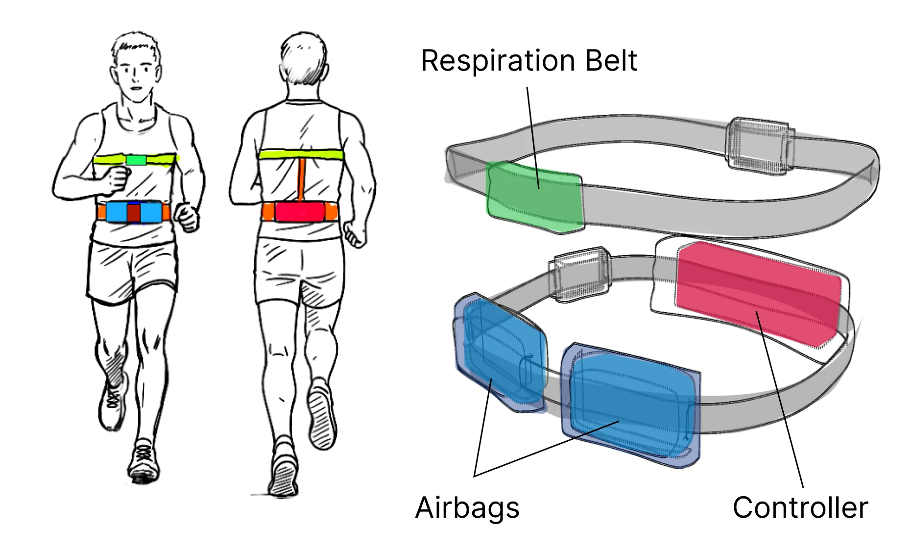
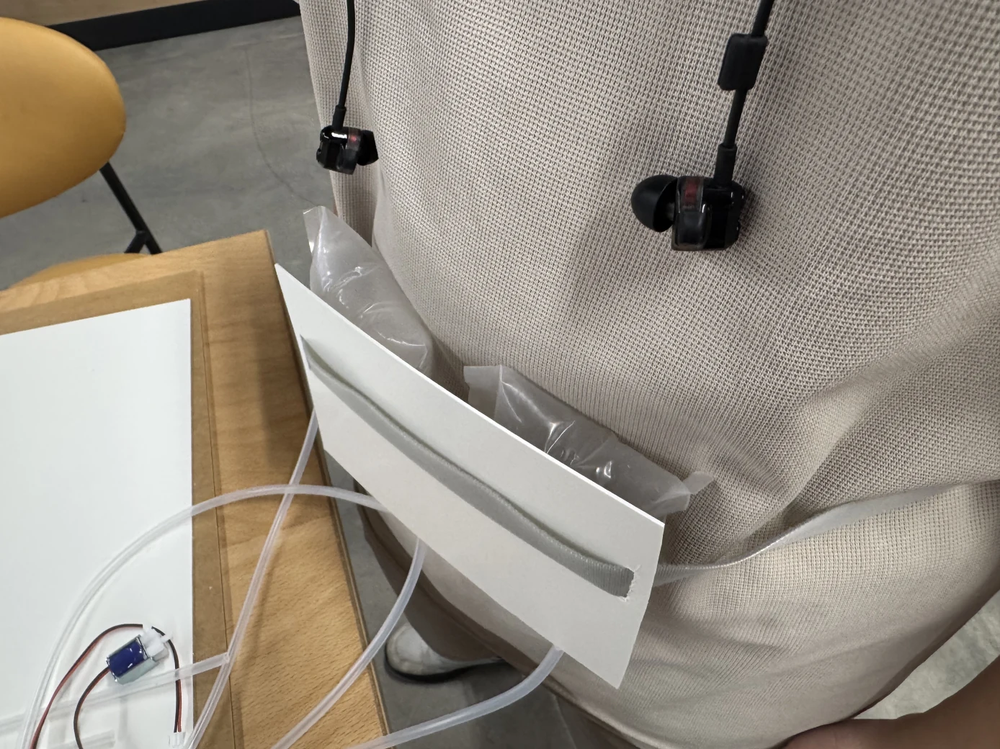
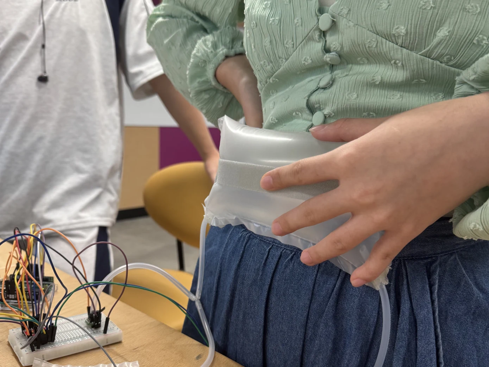
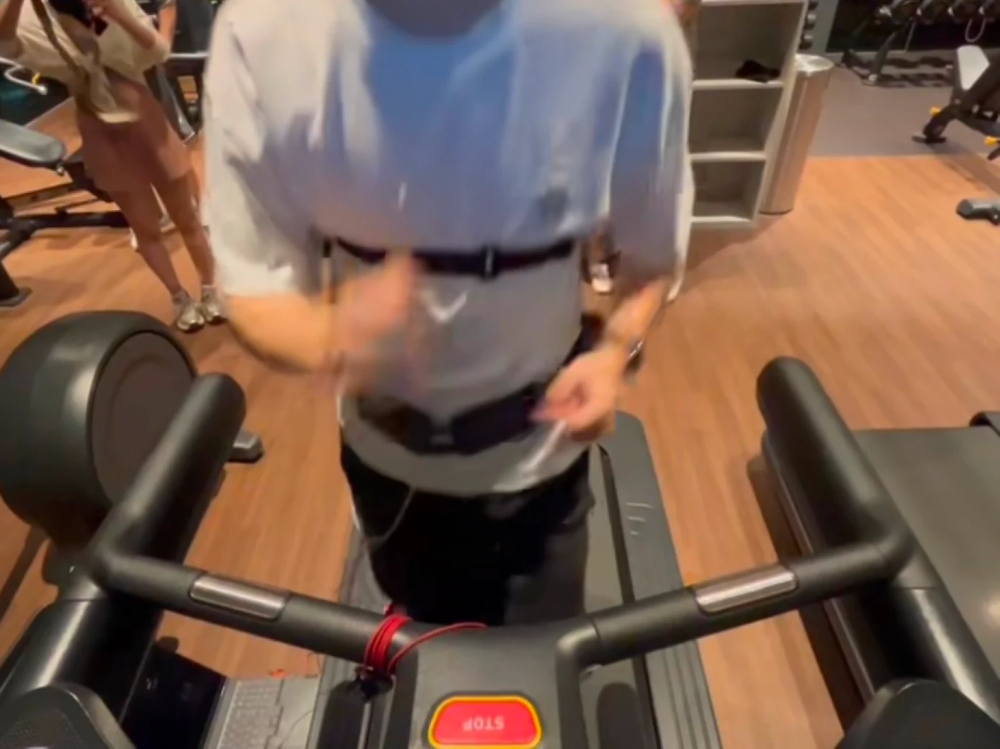
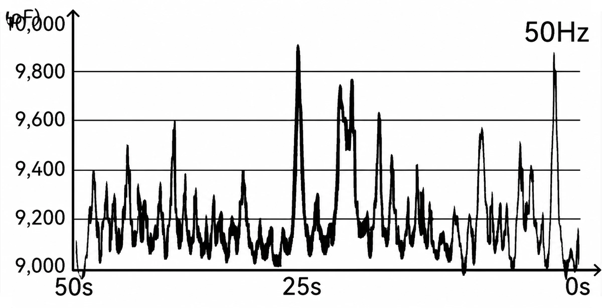
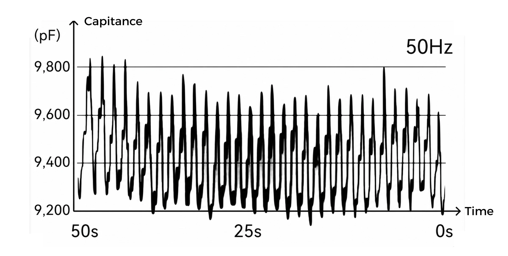
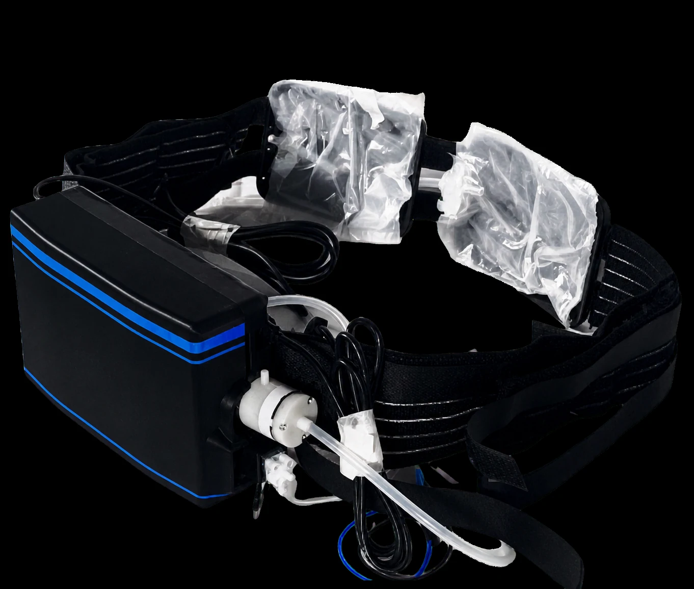

02 · EMBODIED & WEARABLE · DIS COMPANION ’26
Breatho
Turning running cadence into a breathing rhythm that can be felt.
Breatho is a soft wearable respiratory guidance system for amateur runners. It senses the rhythm of a runner’s steps and translates it into gentle cycles of pressure around the abdomen, using inflation and release to suggest when to inhale and exhale.
Rather than adding another number, sound, or screen to a run, Breatho makes breathing guidance physical. The project explores how an internal rhythm can become perceptible through the body—and how a wearable might help runners learn that rhythm while remaining present in movement.

Research · Wearable Design · Pneumatic Prototyping · Interaction Design · User Testing
01
Breathing is difficult to train while moving
Most running data is visible. Breathing remains inside the body.
Running technologies make pace, distance, and heart rate easy to see, but breathing remains largely internal. Novice runners may understand that rhythm matters without being able to maintain it once pace, fatigue, and the surrounding environment begin to change.
Breatho began with a simple question: could breathing guidance be felt instead of watched? The abdomen offered a direct place to explore that idea because pneumatic expansion resembles the physical movement of diaphragmatic breathing.

02
Steps become pressure.
Pressure becomes timing.
The system turns an external locomotor rhythm into a bodily cue for an internal physiological rhythm.
During a run, the system detects cadence and maps it to a selected step-to-breath rhythm. Small air chambers gradually inflate to cue inhalation, then release to mark exhalation. The runner does not need to count steps or interpret an abstract signal; the timing is carried by a sensation that already resembles breathing.
This creates a closed interaction loop between locomotion and respiration: movement shapes the cue, the cue guides breathing, and the runner can adjust through bodily awareness rather than continuous visual attention.
03
Designing where the body should feel the cue
The position and distribution of pressure shaped whether the rhythm felt intuitive or intrusive.



The physical form was developed through repeated studies of air-chamber size, number, and placement. A large central chamber produced a broad sensation but could feel intrusive during movement. Smaller chambers placed laterally created a clearer, more balanced cue while integrating more naturally into a running belt.
These iterations shifted the project from a functional pneumatic prototype toward a wearable interaction. The placement of the cue, the way pressure spread across the abdomen, and the distribution of hardware all influenced whether the rhythm felt understandable or distracting.
04
Testing the rhythm in motion
The interaction had to remain understandable while the body, pace, and environment were changing.

Breatho was evaluated through iterative fitting sessions, treadmill runs, and outdoor running trials. Participants were generally able to understand the press-and-release rhythm quickly and follow it without interrupting their stride. The studies also showed more regular respiratory patterns when the guidance was active.
In the treadmill study, reported perceived exertion decreased from 13.46 to 11.39 on the Borg scale when participants ran with Breatho. This is preliminary evidence from a small study rather than a claim of long-term performance improvement, but it suggests that embodied guidance can make respiratory rhythm easier to maintain during movement.
The trials also exposed the current prototype’s practical limits. Participants valued the clarity of the cue but identified weight, pump noise, rigidity, and long-term comfort as priorities for further development.


in the preliminary treadmill study

05
From instruction
to embodied skill
The best guidance may be the guidance the body gradually learns not to need.
Breatho reframes breathing as more than a hidden physiological measurement. By linking step cadence with body-centred pneumatic feedback, the project makes respiration a tangible and trainable part of the running experience.
The next iteration will focus on a lighter and quieter wearable, more adaptive timing, and guidance that gradually recedes as the runner internalises the rhythm. The longer-term aim is not to command every breath, but to help the body learn a pattern that can eventually continue without constant assistance.
Role: research framing, wearable design, pneumatic prototyping, interaction design, system development, user testing, and visual communication.
Published in the DIS Companion ’26 proceedings.